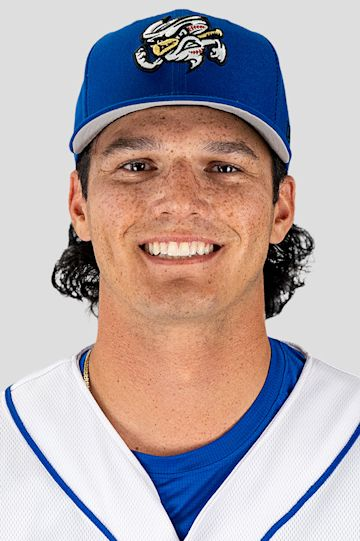

Education
Brigham Young University
General Studies — Business Emphasis
Expected Graduation: 2027
- BYU Independent Study
- Three seasons of collegiate baseball at BYU
Professional Experience
Kansas City Royals Organization
Professional Baseball Player | December 2023–2026
- Right-handed relief pitcher.
- Advanced to the Triple-A level.
- Competed in professional baseball while managing a demanding game and travel schedule.
- Developed skills in preparation, adaptability, teamwork, and performance under pressure.
Milwaukee Brewers Organization
Professional Baseball Player | 2022–2023
- Signed a minor league contract following three seasons at BYU.
- Advanced to the Double-A level.
- Transitioned from a starting pitcher to a professional relief pitcher.
- Traded to the Kansas City Royals organization in December 2023.
Youth Baseball Coach
- Coaching and developing young baseball players.
- Sharing professional baseball knowledge and experience.
Skills
Professional Skills
- Leadership
- Teamwork
- Communication
- Adaptability
- Time management
- Performance under pressure
- Baseball coaching
- Pitching and player development
Business & Technical Skills
- Database design and development
- Entity relationship diagrams
- Structured Query Language (SQL)
- Tableau
- Microsoft Excel Solver
- Pivot tables and charts
- HTML, CSS, and Bootstrap
- Flowchart diagramming
- VBA programming in Excel
Career Accomplishments
- Earned a professional baseball contract in 2022.
- Reached Double-A with the Milwaukee Brewers organization.
- Reached Triple-A with the Kansas City Royals organization.
- Competed professionally from 2022 to 2026.
- Played three seasons of collegiate baseball at BYU.